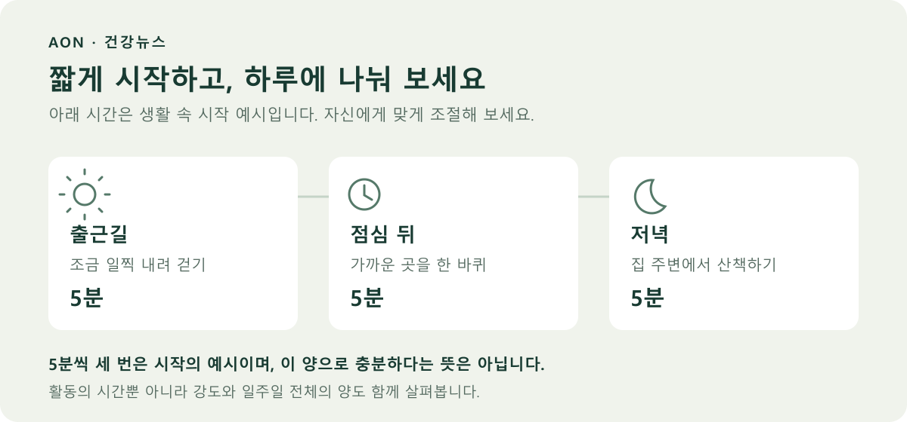

운동할 시간은 없는데, 점심을 먹고 돌아오는 길에는 몇 분의 여유가 있습니다. 이때 ‘30분도 못 할 거면 다음에 제대로 하자’며 지나치지는 않으셨나요? 운동을 시작하기 위해 꼭 30분짜리 빈칸부터 찾아야 하는 것은 아닙니다. 짧은 활동을 하루에 나눠 넣는 방법도 있습니다. 다만 ‘짧아도 의미 있다’는 말과 ‘조금만 하면 필요한 운동이 모두 끝난다’는 말은 구분해야 합니다.
짧게 움직인 시간도 활동량에 포함됩니다
건강을 위한 움직임은 헬스장 안에서만 생기지 않습니다. 걷거나 자전거로 이동하는 시간, 생활 속에서 몸을 쓰는 시간도 신체활동입니다. WHO는 활동의 형태와 길이에 관계없이 움직임을 늘리는 방향을 권합니다.[1]
미국 신체활동 지침은 예전에 있던 ‘한 번에 적어도 10분’이라는 조건을 없앴습니다. 짧게 나눠 한 중강도 이상의 활동도 권장 활동량에 포함할 수 있다는 뜻입니다. 그렇다고 가벼운 움직임 5분과 빠르게 걷기 5분을 같은 운동량으로 계산한다는 뜻은 아닙니다.[2]
한 번의 시간과 일주일의 총량을 함께 봅니다
일반 성인에게 권하는 한 가지 기준은 주당 중강도 유산소 활동 150~300분과 주 2일 이상의 근력 활동입니다. 중강도는 대체로 대화는 가능하지만 노래하기는 어려운 정도로 생각할 수 있습니다. 같은 속도로 걸어도 사람마다 힘든 정도는 다릅니다.[2]
이 숫자는 운동을 처음 시작하는 날부터 채워야 하는 숙제는 아닙니다. 활동이 적었던 사람은 작은 양에서 시작해 시간을 늘려 갈 수 있습니다. 핵심은 한 번에 몇 분을 했는지에만 매달리지 않고, 자신의 상태에 맞는 활동을 일주일 동안 얼마나 쌓았는지도 보는 것입니다.[2]
연구가 말하는 것과 말하지 않는 것
미국의 40세 이상 성인 4,840명을 분석한 연구에서는 중강도 이상 활동을 짧게 흩어서 했는지, 일정 시간 이어서 했는지보다 전체 활동량과 사망 위험의 관련성이 중요하게 나타났습니다.[3]
다만 사람들의 활동과 이후 건강을 관찰한 연구입니다. ‘짧은 운동이 긴 운동과 모든 면에서 똑같다’거나 ‘매일 5분만 하면 특정 질환을 예방한다’는 결론을 낸 실험은 아닙니다. 이 연구는 긴 시간을 확보하지 못하더라도 활동을 늘릴 방법을 찾을 근거로 읽는 편이 적절합니다.[3]

오늘은 생활 속 한 구간부터 골라 보세요
예를 들어 점심 뒤에 무리 없는 속도로 5분 걷기를 넣어 볼 수 있습니다. 여기서 5분은 시작 방법을 설명하기 위한 예시입니다. 그것만으로 주간 권장량을 채운다는 뜻도, 모든 사람에게 맞는 처방이라는 뜻도 아닙니다.
처음부터 시간을 크게 늘리기보다 ‘언제 움직일지’를 한 곳에 정해 보세요. 점심 뒤, 퇴근 후, 저녁 설거지를 마친 뒤처럼 반복되는 일과에 붙여 보는 것입니다. 걷기 외에 자신이 즐기는 활동을 골라도 됩니다. 얼마나 했는지와 몸의 반응을 적어 두면 다음 계획을 정할 때 참고할 수 있습니다.
몸의 반응에 따라 시작점을 조절합니다
평소 활동이 적었다면 짧은 시간을 채우려고 처음부터 강도를 높일 필요는 없습니다. 현재 할 수 있는 활동에서 시작해 차츰 늘려 보세요. 심장질환 등 만성질환이 있다면 적절한 활동 종류와 양을 의료진과 상의하는 것이 좋습니다.[4]
활동 중 가슴 통증이나 어지럼이 생기면 억지로 이어가지 말고 의료진의 평가를 받으세요. 이 글은 일반 성인의 활동 시작을 돕는 안내이며, 수술 후 회복이나 특정 질환의 운동 처방을 대신하지 않습니다.[4]
오늘의 한 가지: 자신의 상태에 맞게 움직일 수 있는 짧은 시간대를 하나 골라 기록해 보세요. 시작한 뒤의 몸 상태를 살피며 활동량을 늘려 가면 됩니다.
이 글의 5분 걷기는 생활 속 시작을 설명하는 예시입니다. 주간 권장량을 충족한다는 의미가 아니며, 개인별 건강 상태에 따라 조절이 필요합니다.